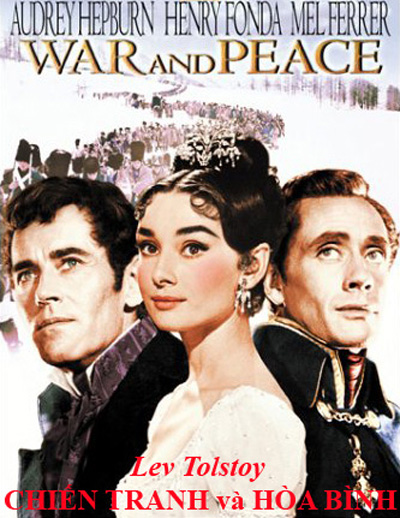

Ở Petersburg, trong các giới cao cấp diễn ra một cuộc đấu tranh gay gắt hơn bao giờ hết giữa các đảng phái của Rumiantev, của các quan lại Pháp, của Maria Feodorovna(1), của thái tử của mấy người khác nữa. Cũng như xưa nay vẫn thế, cuộc tranh chấp này diễn ra trong tiếng vo ve của bầy ong đực trong triều đình.
Nhưng cuộc sống Petersburg yên tĩnh, xa hoa, chỉ bận tâm lo đến những ảo ảnh, những phản ánh của cuộc đời, vẫn tiếp tục theo nếp cũ cho nên phải cố gắng lắm mới có thể nhận thức được nguy cơ và tình cảnh khó khăn của nhân dân Nga hồi bấy giờ. Vẫn những buổi lâm triều ấy, những cuộc vũ hội ấy, đoàn kịch Pháp ấy, cũng vẫn những cuộc tranh chấp ấy, chạy chọt, kèn cựa như trước ở cung đình và trong quan trường. Chỉ có trong các giới cao cấp nhất người ta mới cố gắng nhớ tới sự khó khăn của tình thế lúc bấy giờ. Người ta thì thầm rỉ tai nhau chuyện hai hoàng hậu chống đối nhau trong những hoàn cảnh khó khăn như vậy. Hoàng hậu Maria Feodorovna, luôn cố gắng đến các cơ quan từ thiện và giáo dục dưới quyền chủ trì của người, đã thu xếp dời tất cả cơ quan này về Kazan, và bấy giờ đồ đạc của các cơ quan đó đều đã được đóng gói sẵn sàng. Còn hoàng hậu Elizaveta Alekxeyevna(2) thì khi có người hỏi người có truyền bảo gì không, hoàng hậu đã trả lời với lòng ái quốc đặc biệt Nga của mình rằng người không thể truyền bảo gì về cơ quan của nhà nước được vì đó là việc của hoàng thượng; còn về phần riêng, thì người đã có lòng phán rằng người sẽ là người cuối cùng rời khỏi Petersburg.
Ở nhà Anna Pavlovna, tối hôm mười sáu tháng tám, đúng vào ngày diễn ra trận Borodino, có tổ chức một buổi tiếp tân. Tiết mục then chốt của tối tiếp tân này là tuyên đọc bức thư của đức cha giám mục gửi kèm theo bức tượng thánh Xergey gửi lên hoàng đế. Bấy giờ bức thư này được xem là mẫu mực của thể văn hùng biện ái quốc của giới tăng lữ. Người đọc bức thư sẽ là công tước Vaxili, người nổi tiếng về nghệ thuật đọc (chính ông ta vẫn thường đọc trong cung hoàng hậu). Theo quan niệm thời bấy giờ thì nghệ thuật đọc là ở chỗ đọc cho to, giọng ngân nga luôn chuyển từ tiếng the thé sang tiếng thì thầm êm dịu, hoàn toàn không đếm xỉa gì đến ý nghĩa của câu văn, cho nên từ này được đọc the thé lên, từ kia được đọc thì thầm, đều hoàn toàn là chuyện tình cờ. Việc đọc này, cũng như tất cả các buổi tiếp tân của Anna Pavlovna, đều có một ý nghĩa chính trị. Đến dự tối tiếp tân sẽ có một số nhân vật quan trọng cần phải làm cho họ xấu hổ vì họ thường hay lui tới kịch viện Pháp, và cần phải thức tỉnh tình yêu nước trong lòng họ. Các tân khách đều đã khá đông, nhưng Anna Pavlovna thấy trong phòng khách chưa đủ mặt những người cần có mặt nên chưa cho họ đọc, mà chỉ cầm trịch cho tân khách nói chuyện chung chung.
Tin sốt dẻo nhất trong ngày hôm ấy là tin bá tước phu nhân Bezukhova ốm. Cách đây mấy hôm, bá tước phu nhân bỗng lâm bệnh, bỏ mấy buổi dịp trong đó lẽ ra phu nhân phải là vật trang hoàng, và nghe nói phu nhân không tiếp ai cả, không mời các bác sĩ nổi tiếng ở Petersburg xưa nay vẫn chữa cho phu nhân, mà lại phó mình cho một ông thầy thuốc người Ý nào đó chữa theo một phương pháp gì đấy rất mới, rất lạ.
Mọi người đều biết rõ rằng vị bá tước phu nhân kiều diễm ấy lâm bệnh là vì lâm vào tình cảnh éo le một lúc lấy hai chồng, và cách chữa bệnh của ông thầy thuốc người Ý chính là làm thế nào khắc phục được cái tinh cảnh éo le ấy, nhưng trước mặt Anna Pavlovna không những không ai dám nghĩ đến điều đó, mà thậm chí người ta còn làm như không ai hay biết tí gì về việc đó.
- Tội nghiệp, nghe nói bá tước phu nhân ốm nặng lắm. Ông thầy thuốc bảo đó là bệnh viêm ức.
- Viêm ức à? Ồ! Đó là một thứ bệnh rất đáng sợ.
- Nghe nói hai kẻ tình địch đã hoà giải nhờ cái bệnh viêm ức này.
Người ta nhắc đi nhắc lại hai chữ "viêm ức" một cách khoái trá.
- Nghe nói vị bá tước già tội nghiệp lắm thì phải. Ông ta đã khóc như một đưa trẻ khi bác sĩ nói với ông ta rằng trường hợp này nguy hiểm.
- Ồ, phu nhân có mệnh hệ nào thì thật là một tổn thất kinh khủng. Phu nhân là một người đàn bà kiều diễm mê hồn.
- Các vị đang nói đến bá tước phu nhân đáng thương của chúng ta đấy ư? - Anna Pavlovna lại gần nói. - Tôi đã cho người đi hỏi tin tức. Nghe nói phu nhân đã đỡ được chút ít.
- Ồ chắc chắn nàng là người đàn bà đáng thương nhất đời - Anna Pavlovna nói đoạn mỉm cười như để chế giễu thái độ bồng bột của mình, - Phu nhân với tôi hai người thuộc hai phái khác nhau, nhưng điều đó không hề ngăn trở tôi quý trọng phu nhân đúng như phu nhân xứng đáng được quý trọng. Phu nhân thật là bất hạnh! - Anna Pavlovna nói thêm. Cho rằng Anna Pavlovna nói câu này là đã hé mở bức màn bí mật phủ trên bệnh tình của bá tước phu nhân, một chàng thanh niên thận trọng đã dám tỏ ý ngạc nhiên không hiểu tại sao người ta lại không cho mời những người vị danh y mà lại dùng một anh lang băm có thể cho phu nhân uống những liều thuốc nguy hiểm.
Những tin tức mà ông thu lượm được có thể chính xác hơn của tôi. - Anna Pavlovna bỗng dùng một giọng chua chát đáp lại chàng thanh niên thiếu lịch lãm - Nhưng tôi được biết qua một nghồn tin chắc chắn rằng ông thầy thuôc đó là một người rất uyên bác và tài giỏi. Đó là vị thầy thuốc thân cận của hoàng hậu Tây ban nha. Và sau khi đã giáng lên chàng thanh niên kia một đòn chí mạng như vậy, Anna Pavlovna quay về phía Bilibin bấy giờ đang đứng ở một nhóm khác nói chuyện về người Áo, da trán co lại, hẳn là đang chuẩn bị cho nó dãn ra để buông một câl dí dỏm.
- Tôi cho là rất thú vị! - Bilibin nói về sự kiện ngoại giao gửi về Viên kèm theo mấy lá cờ áo do Vitghenstain, vị anh hùng thành Petropol chiếm được. (ở Petersburg thường gọi Vitghenstain như vậy)
- Sao, thế nào? - Anna Pavlovna hỏi Bilibin, có ý để mọi người im lặng nghe cái câu dí dỏm Bilibin sắp nói ra (câu này bà ta đã biết trước), và Bilibin nhắc lại nguyên văn câu sau đây trong bức thông điệp ngoại giao mà chính ông ta đã viết ra: - Hoàng đế gửi lại mấy lá cờ áo, - Bilibin nói, - Đây là những lá cờ của nước bạn đã thất lạc mà ngài đã tìm thấy ngoài lề đường! - Bilibin vừa nói vừa cho lớp da trên trán dãn ra.
- Thú tuyệt, thú tuyệt! - công tước Vaxili nói.
- Có lẽ đó là con đường Varsava chăng? - công tước Ippolit bỗng nói rất to và rất bất ngờ. Mọi người đều quay lại nhìn Ippolit không hiểu chàng muốn ngụ ý gì. Công tước Ippolit cũng vui vẻ và ngạc nhiên đưa mắt nhìn quanh.
Cũng như mọi người, chính chàng cũng không hiểu câu mình vừa nói ngụ ý gì. Trong sự nghiệp ngoại giao của chàng, Ippolit đã có lần nhận thấy rằng những câu nói ra một cách đột ngột như vậy nhiều khi lại đâm ra rất dí dỏm, cho nên hễ có dịp là chàng cứ nói bất cứ một câu gì. Chưa biết chừng thế mà hoá ra hay cũng nên, chàng nghĩ, - và dù không hay đi nữa, thì rồi họ cũng tìm ra được cách hiểu. Quả nhiên, trong đám tân khách vừa bắt đầu có một phút im lặng nặng nề, thì nhân vật thiếu lòng ái quốc mà Anna Pavlovna đang chờ đợi và muốn cảm hoá đã bước vào phòng. Anna Pavlovna mỉm cười đưa ngón tay lên doạ Ippolit, rồi cùng công tước Vaxili ra bàn; đem lại cho ông ta hai cây nến và bản chép tay bức thư giám mục, đoạn yêu cầu ông ta bắt đầu. Trong phòng lặng hẳn đi.
- Tâu bệ hạ chính nhân chí thánh - công tước Vaxili cất giọng nghiêm trang đọc lớn, đoạn đưa mắt nhìn qua cử toạ một lượt như muốn hỏi xem có ai phản đối gì không. Nhưng chẳng có ai nói gì cả Moskva, thủ đô đầu tiên của chúng ta, thành Jexusalem mới, đang tiếp đón đấng Cơ đốc của nó - ông ta nhấn mạnh hai chữ của nó - như người mẹ hiền đón những người con hiếu thảo vào lòng và qua bóng đen vừa xuất hiện vẫn nhìn thấy trước ánh vinh quang rực rỡ của triều đại Người, thành Moskva hân hoan cất tiếng ca "Hoxanna, cầu Thượng đế ban phước cho người sắp đến!"(3) - Công tước Vaxili đọc câu cuối cùng này với một giọng như sắp khóc.
Bilibin chăm chú quan sát mấy cái móng tay của mình, và có nhiều người có vẻ bối rối như tự không biết mình phạm lỗi gì?
Anna Pavlovna thì thầm nhắc trước câu sắp đến, như một bà già xuýt xoa khấn khứa bài kinh nhận mình thánh: "Cứ mặc cho tên Goliath hỗn xược và trơ tráo"(4).
Công tước Vaxili đọc tiếp:
- Cứ mặc cho tên Goliath hỗn xược và trơ tráo kia từ biên cương nước Pháp, đem đến tận biên thuỳ nước Nga những nỗi thê lương khủng khiếp và đầy tử khí, cái đức tính khiêm tốn, cái ná của David Nga sẽ bất thần đánh mạnh vào cái đầu kiêu hãnh khát máu của nó. Bức tượng thánh này của đức thánh Xerghi, vị chiến sĩ nhiệt thành xưa kia đã từng bảo vệ hạnh phúc của tổ quốc ta, thần xin dâng lên Sa hoàng bệ hạ. Thần lấy làm ân hận rằng tuổi già sức yếu không cho phép mình có được diễm phúc đến chiêm ngưỡng dung mạo tối anh minh của bệ hạ. Thần xin gửi lên đấng cao xanh những lời cầu nguyện nhiệt thành, cầu đấng Vạn năng phù hộ cho dòng dõi những người chính trực và thực hiện những ước nguyện của bệ hạ được.
- Hùng tráng quá! Văn hay quá! - chung quanh có tiếng trầm trồ khen ngợi người đọc và người viết thư. Được bài văn này cổ vũ, các tân khách của Anna Pavlovna còn bàn tán hồi lâu về tình cảnh của tổ quốc và đưa ra nhiều ức thuyết khác nhau về kết quả trận đánh sắp diễn ra nay mai.
- Rồi các vị sẽ xem2 - Anna Pavlovna nói, - Ngày mai, ngày sinh nhật của hoàng thượng, ta sẽ nhận được những tin mới. Linh tính tôi báo trước là tin rất lành.
Chú thích:
(1) Tức hoàng hậu Maria Feodorovna vợ Pavel và đương kim hoàng hậu Elizaveta Alekxeyevna, vợ Alekcxandr đệ nhất (2) Hoàng hậu Elizaveta Alekxeyvna là công chúa xứ Baden (Đức) nhưng sau khi lấy chồng thì lại biểu dương một lòng ái quốc "đặc biệt Nga" (3) Lời hoan hô chào đón Jesus Cơ dốc (Phúc âm). (4) Goliath là người khổng lồ của quân Philixtin bị David, người chăn cừu xứ Israel giết chết (Cựu ước)